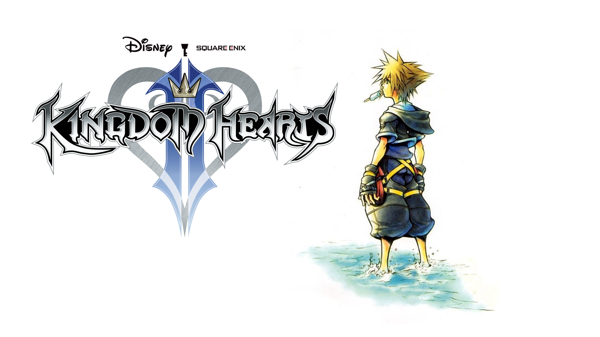
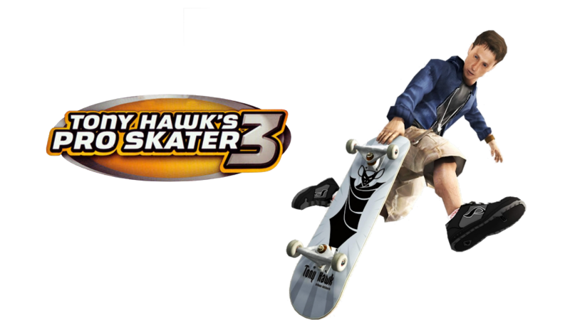
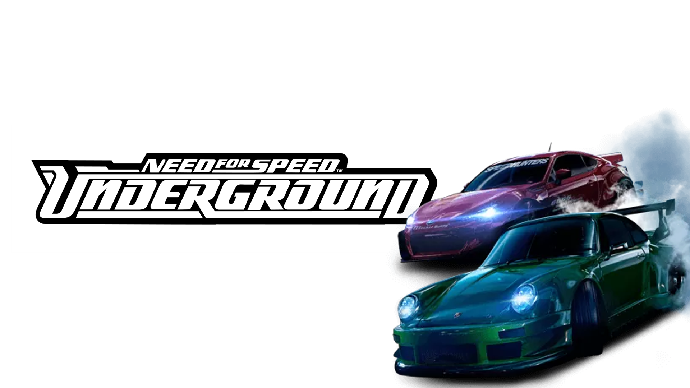

Kingdom Hearts II
"KHII"
Kingdom hearts II
Kingdom hearts is een serie die uitkwam in 2002. Het is ontworpen door Square Enix, voorheen Squire Soft. De spelserie is een mix van disney en Final Fantasy elementen
Waarom Kingdom Hearts II?
Kingdom Hearts I was een van de eerste spellen die ik heb gespeeld. Ik zag mijn oudere oom het voor het eerst spelen op de Playstation 2. Toen hij zijn Playstation 2 verkocht kreeg ik wel dit spel cadeau. Jaren hierna kwam ik erachter dat er ook Deel 2 was. Ik weet dat ik 3 maanden lang heb zitten sparen om Kingdom Hearts II te halen. Het was het zeker waard
Tony Hawk Pro Skater 3
"THPS3"
Tony Hawk Pro Skater 3
Tony Hawk's Pro Skater 3 is het derde spel uit de Tony Hawk-spelserie. In het spel moet de gebruiker skateboarden.
Waarom THPS3?
Denk dat ik al sinds kind af aan al een fan ben van skaten. Er is een foto van mij toen ik een jaar of 7 was en "skater" kleding aan had. Ik heb dit spel denk ik tot mijn 14 gespeeld. En heb pas een 3rd party client gevonden waarmee ik online kan spelen.
Need For Speed Undergound
"NFS: Undergound"
Need For Speed: Underground
Need for Speed: Undergound is een computerspel dat werd ontwikkeld door EA Black Box en werd uitgegeven door EA Games. Het spel is een racespel en het zevende spel uit de serie Need for Speed.
NFS: Underground
NFS: Underground is de enige spel waar ik enige kans maakte tegen mijn pa toen ik 8 was. Er was een drift gamemode wat ik alleen maar wilde spelen omdat mijn vader er niet goed in was.